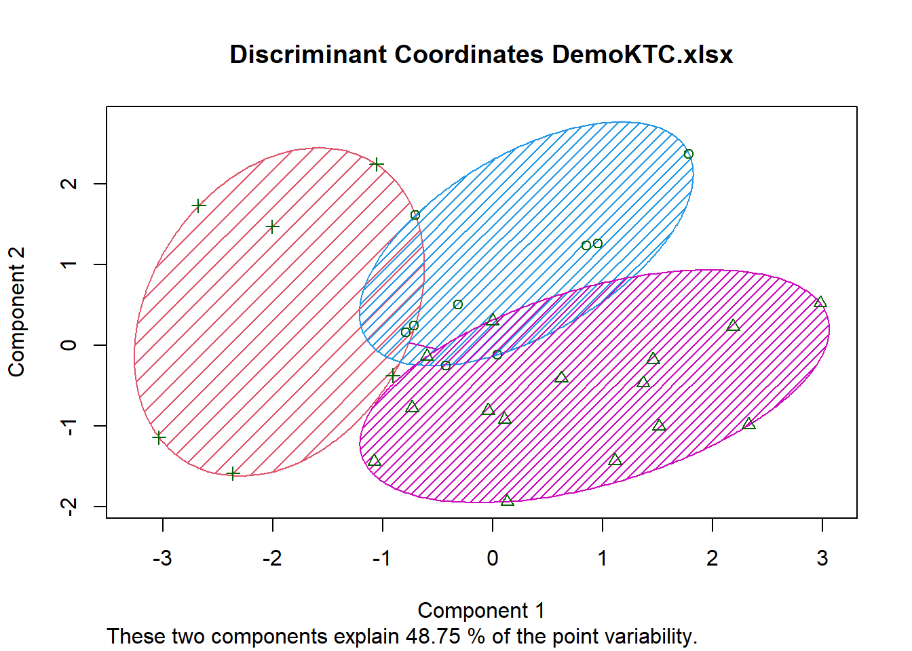

# A tibble: 30 × 7
Age Female Income Married Children Loan Mortgage
<dbl> <dbl> <dbl> <dbl> <dbl> <dbl> <dbl>
1 48 1 17546 0 1 0 0
2 40 0 30085. 1 3 1 1
3 51 1 16575. 1 0 1 0
4 23 1 20375. 1 3 0 0
5 57 1 50576. 1 0 0 0
6 57 1 37870. 1 2 0 0
7 22 0 8877. 0 0 0 0
8 58 0 24947. 1 0 1 0
9 37 1 25304. 1 2 1 0
10 54 0 24212. 1 2 1 0
# ℹ 20 more rowsCustomer Segmentation
Market Segmentation Report
1.Introduction
The KTC Company would like to segment their customers based on their characteristics.The company has information regarding the customers for segmentation.The company would like to group customers as per their requirements and characteristics based on the data the entity have regarding customers.
2.Descriptive Mining
2.1 Exploratory Data Analysis (Data Exploration)
We have information regarding 30 customers of KTC Company.The Company has details of their age,income,gender,marital status,dependents(number of children),financial status(car loan,mortgage loan).
Data frame:crs$dataset[, c(crs$input, crs$risk, crs$target)] 30 observations and 7 variables Maximum # NAs:0
Storage
Age double
Female double
Income double
Married double
Children double
Loan double
Mortgage double Age Female Income Married
Min. :22.00 Min. :0.0000 Min. : 8877 Min. :0.0
1st Qu.:37.25 1st Qu.:0.0000 1st Qu.:18166 1st Qu.:1.0
Median :47.00 Median :1.0000 Median :24241 Median :1.0
Mean :45.97 Mean :0.5667 Mean :28012 Mean :0.8
3rd Qu.:56.75 3rd Qu.:1.0000 3rd Qu.:35923 3rd Qu.:1.0
Max. :66.00 Max. :1.0000 Max. :59804 Max. :1.0
Children Loan Mortgage
Min. :0.0000 Min. :0.0000 Min. :0.0
1st Qu.:0.0000 1st Qu.:0.0000 1st Qu.:0.0
Median :0.5000 Median :0.0000 Median :0.0
Mean :0.9333 Mean :0.4333 Mean :0.4
3rd Qu.:2.0000 3rd Qu.:1.0000 3rd Qu.:1.0
Max. :3.0000 Max. :1.0000 Max. :1.0 crs$dataset[, c(crs$input, crs$risk, crs$target)]
7 Variables 30 Observations
--------------------------------------------------------------------------------
Age
n missing distinct Info Mean pMedian Gmd .05
30 0 23 0.998 45.97 46.5 15.12 22.45
.10 .25 .50 .75 .90 .95
26.60 37.25 47.00 56.75 61.10 64.20
lowest : 22 23 27 31 36, highest: 57 58 61 62 66
--------------------------------------------------------------------------------
Female
n missing distinct Info Sum Mean
30 0 2 0.737 17 0.5667
--------------------------------------------------------------------------------
Income
n missing distinct Info Mean pMedian Gmd .05
30 0 30 1 28012 25590 14919 13945
.10 .25 .50 .75 .90 .95
15716 18166 24241 35923 51039 56676
lowest : 8877.07 12640.3 15538.8 15735.8 16497.3
highest: 41034 50576.3 55204.7 57880.7 59803.9
--------------------------------------------------------------------------------
Married
n missing distinct Info Sum Mean
30 0 2 0.481 24 0.8
--------------------------------------------------------------------------------
Children
n missing distinct Info Mean pMedian Gmd
30 0 4 0.858 0.9333 1 1.163
Value 0 1 2 3
Frequency 15 5 7 3
Proportion 0.500 0.167 0.233 0.100
For the frequency table, variable is rounded to the nearest 0
--------------------------------------------------------------------------------
Loan
n missing distinct Info Sum Mean
30 0 2 0.737 13 0.4333
--------------------------------------------------------------------------------
Mortgage
n missing distinct Info Sum Mean
30 0 2 0.721 12 0.4
-------------------------------------------------------------------------------- /\ /\
{ `---' }
{ O O }
==> V <== No need for mice. This data set is completely observed.
\ \|/ /
`-----' Age Female Income Married Children Loan Mortgage
30 1 1 1 1 1 1 1 0
0 0 0 0 0 0 0 0The mice function confirms that the data has no missing values.
2.1.1 Age
After exploring the data,we can conclude that the minimum age of customers is 22 and maximum age is 66.The average age of customers is 45.97.
The box plot shows that there is no outliers or extreme values in the data.
The histogram shows that most people are in the age range between 40s and 60s.It means that it is a kind of bi-model figure.
2.1.2 Income
After data exploration the company came to conclusion that that the income range of customers is between ₹8,877 and ₹59,804.The average value being ₹28,012 and median being ₹24,241.
Right-skewed (mean > median)
Box Plot Interpretation
The box plot for income shows that there are no extreme values.
Histogram Interpretation
The histogram for income is positively skewed (skewed to the right) which shows that most people have low income and only very small number of people have very high income
2.1.3 Gender
The data provides the information that majority (56.7%) are females as the mean is 0.5667 and median is 1.
2.1.4 Marital Status
The data shows that 80% of the people are married as the mean is 0.8 and the remaining 20% are unmarried.
2.1.5 Number of children
The data depicts that the maximum number of children for the customers in the given set is 3 per individual.However,on average there is only one child per individual as the mean is (0.933).As the median is 0.5,most customers have 0 child.
2.1.6 Loan Status
Out of the total customers,nearly 44% has loan liability.Majority of the customers have no loan as the median is 0.
2.1.7 Mortgage
The mortgage status is almost similar to loan status as only 40% have a mortgage as mean is 0.4 and majority does not have mortgage as median being 0.
3. Segmentation using Clustering
Clustering is a method of grouping the observations based on their similarities.We use distance measures for assessing the dissimilarity among the observations.
3.1 Hierarchical Clustering
Hierarchical Clustering is an algorithm that builds a hierarchy (tree) of clusters, without pre-specifying the number of clusters. It can be visualized using a dendrogram, which shows how clusters are merged or split over time.
Hierarchical clustering is performed with number of clusters as 10 and dendrogram is created
The dendrogram shows the agglomeration at different ages.After the hierarchical clustering is done,k means clustering is done with number of clusters set to 5 and later to 3 clusters.

3.2 K-Means Clustering
K-means is an unsupervised machine learning algorithm used to partition a dataset into K distinct, non-overlapping clusters based on similarity.It organizes observations into similar groups.
[1] "9 9 3 2 7" Age Female Income Married Children Loan Mortgage
0.5446970 0.5666667 0.3757313 0.8000000 0.3111111 0.4333333 0.4000000 Age Female Income Married Children Loan Mortgage
1 0.5303030 0.5555556 0.40043981 1.0000000 0.2592593 0.4444444 1
2 0.6111111 1.0000000 0.42584074 0.8888889 0.3333333 0.2222222 0
3 0.3939394 1.0000000 0.29405253 0.0000000 0.3333333 1.0000000 1
4 0.0000000 0.0000000 0.03694742 0.0000000 0.3333333 0.5000000 0
5 0.6980519 0.0000000 0.41133723 1.0000000 0.3333333 0.4285714 0[1] 6.4813274 5.0793648 0.8695460 0.7249524 3.1697907As the diagram shows too much overlapping between the variables,it is decided to change the cluster size to 3.
[1] "9 9 3 2 7" Age Female Income Married Children Loan Mortgage
0.5446970 0.5666667 0.3757313 0.8000000 0.3111111 0.4333333 0.4000000 Age Female Income Married Children Loan Mortgage
1 0.5303030 0.5555556 0.40043981 1.0000000 0.2592593 0.4444444 1
2 0.6111111 1.0000000 0.42584074 0.8888889 0.3333333 0.2222222 0
3 0.3939394 1.0000000 0.29405253 0.0000000 0.3333333 1.0000000 1
4 0.0000000 0.0000000 0.03694742 0.0000000 0.3333333 0.5000000 0
5 0.6980519 0.0000000 0.41133723 1.0000000 0.3333333 0.4285714 0[1] 6.4813274 5.0793648 0.8695460 0.7249524 3.1697907As there is many overlapping when clustering is done using 5 clusters,the elbow diagram is prepared to know the optimal numbers of clusters to be used for the segmentation.
[1] 1 2 2 2 3 3 1 3 2 2 3 1 2 3 2 2 2 3 3 2 3 2 3 1 1 3 2 2 1 3After preparing the elbow plot the elbow or the curve is visible in the 3rd point,which means that the optimal cluster size is 3.So, using the K means clustering,the discriminant plot is prepared with 3 clusters.It is found from the graph that there is less overlapping compared to previous diagram.
[1] "9 15 6" Age Female Income Married Children Loan Mortgage
0.5446970 0.5666667 0.3757313 0.8000000 0.3111111 0.4333333 0.4000000 Age Female Income Married Children Loan Mortgage
1 0.5303030 0.5555556 0.4004398 1 0.2592593 0.4444444 1.0
2 0.6530303 0.5333333 0.4361136 1 0.3333333 0.3333333 0.0
3 0.2954545 0.6666667 0.1877126 0 0.3333333 0.6666667 0.5[1] 6.481327 11.117786 5.631834
cluster_id Age Female Income Married Children Loan Mortgage
1 1 35.00000 0.6666667 18436.68 0 1.0000000 0.6666667 0.5000000
2 2 40.38462 0.5384615 20906.03 1 1.2307692 0.4615385 0.4615385
3 3 58.54545 0.5454545 41632.52 1 0.5454545 0.2727273 0.2727273This is the k means clustering with 3 clusters and discriminant plot is prepared.We can find that the overlapping is less with 3 clusters compared to clustering done with 5 clusters.